The following tutorial was created with SiteTools 4.2 and uses the CSV file “si_trees.csv” found in the directory: /<user>/Documents/Site Tools/Samples/. The import process for other types of text files is similar.
On the “Batch” tab, click “Import Data”
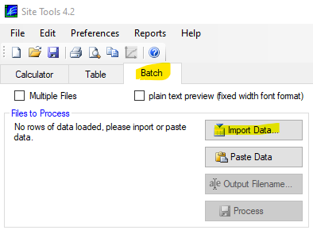
Select the “si_trees.csv” file and press “Open”
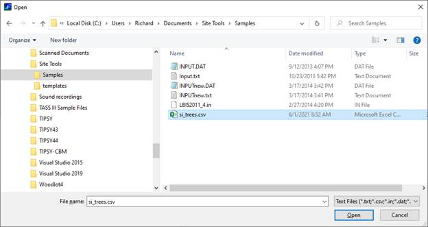
The import window should look like this:
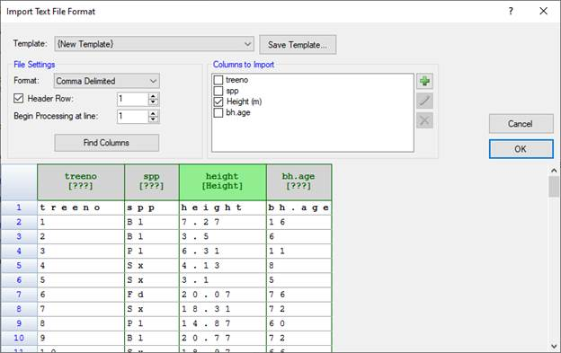
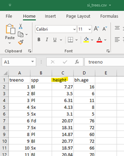
Initially, SiteTools has found all four columns, but only recognizes the name of the height column. If you pressed OK now, only the one column (green column header and checkbox in “Columns to Import”) would be imported.To Import other columns either:
1. check the checkbox in the “Columns to Import” section,
2. click on the column header, which brings up the “Edit Import Column” window, in there, check the process column checkbox, or
3. right click on the column header and select “Process Header” from the context menu.
The column type also needs to be specified so SiteTools can process the data correctly. If the header in the input file is named with the SiteTools column names, the column types will be selected automatically.
SiteTools will automatically recognize the following column headers:
· "age", "total age"
· "bhage", "bh age", "breast height age"
· "y2bh", "years to breast height",
· "height", "ht",
· "site index", "siteindex", "si",
· "species", "spc", "sp",
· "regen", "regeneration",
· "loc", "location",
· "est", "estimate", "estimatemethod"
To setup the species column, click on the column header to bring up the “Edit Input Column” window.
1. Check the “Process Column” checkbox.
2. Select “Species” from the “Type” list.
3. Press “OK”
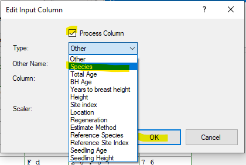
Now, two column headers are green and the headers now show the Column Type in [square brackets] below the column name. [???] denotes the column is type “Other”.
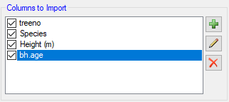
To set the other two columns to import, we can check the checkboxes in the “Columns to Import” listAll columns will now be imported. The “treeno” column will be left as an “Other” column, which can be reported, but will not be used for calculation purposes.
To set the column type for the bh.age column
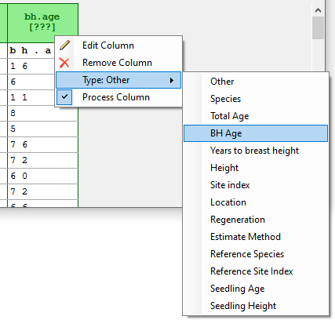
, right click on the “bh.age” column header, select the “Type:” sub menu and then select “BH Age” from the list.All columns are now ready to import.
At this point you can use the “Save Template” feature to store this template for future use.
Press OK to import the four columns.
The imported data should look like this:
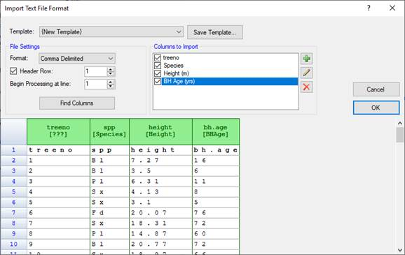
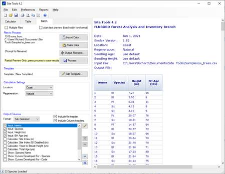
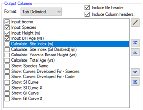
The “Output Columns” section can be used to setup the column in your output report.The output “Format” option can be adjusted to CSV if preferred. At the very top of the Batch tab is a “plain text preview” checkbox, which will preview the file in the selected output format.
To have SiteTools calculate Site Index check the “Calculate: Site Index (m)” checkbox. That column will now display on the preview. The “Show: SI Curve” can also be checked.
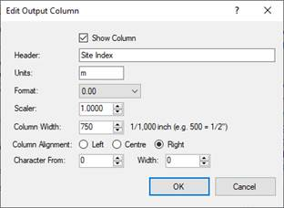
Output format, column widths and column order can be adjusted through this section. Double clicking an item, or clicking on the edit button (pencil) will bring up the “Edit Output Column” windowThe edit output column has many parameters that can be adjusted.
The output report will now show the four input columns and the two calculated columns.
The report can now be saved by right clicking on the report or accessing options via the “Reports” menu.
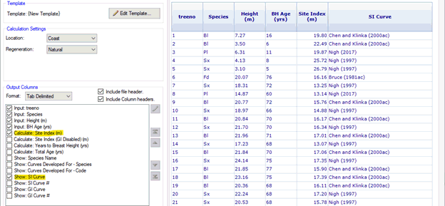